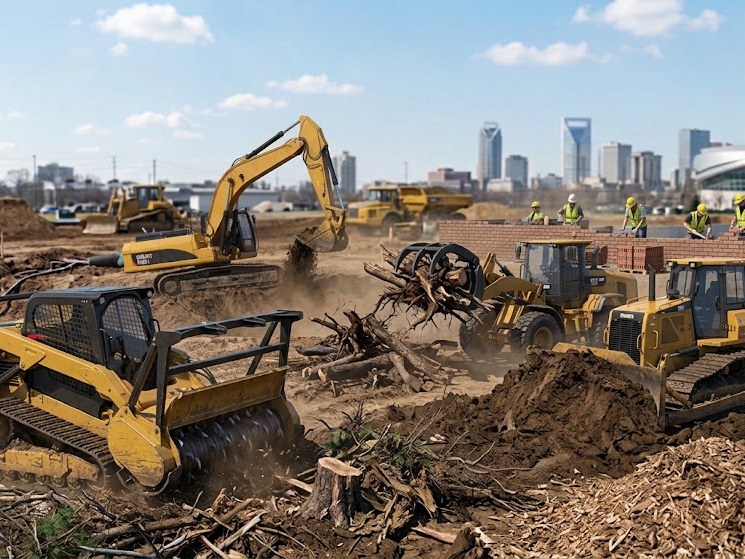
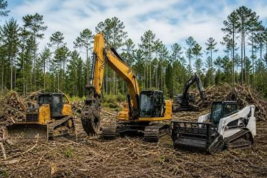
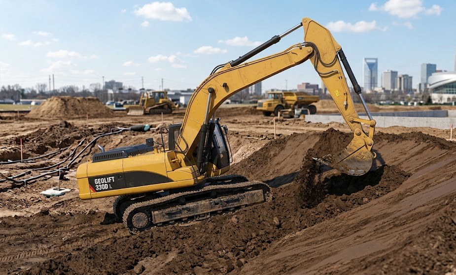

Masonry
Brick, block, and stone built to last. Foundations and footings, retaining walls, steps and walkways, patios, chimneys, and veneer, plus repairs and tuckpointing on older work.
Masonry services →Masonry · Land Clearing · Grading
One crew · Three trades
C&W Masonry, LLC clears the land, grades it right, and builds the brick, block, and stone that goes on top of it. One crew and one point of contact, from the first site visit to the final walkthrough.

What we do
Most jobs that start with clearing a lot end with something built on it. We handle the ground work and the masonry, so you are not lining up three crews and hoping their schedules meet.
Brick, block, and stone built to last. Foundations and footings, retaining walls, steps and walkways, patios, chimneys, and veneer, plus repairs and tuckpointing on older work.
Masonry services →
Lots and acreage cleared and ready to build. Tree and brush removal, stump removal, forestry mulching, and debris haul-off, with a clean site left behind.
Land clearing services →
Ground shaped for drainage and a solid build. Rough and finish grading, site leveling, cut and fill, driveway and building-pad prep, and backfill.
Grading services →How a project goes
Every service has its own step-by-step page. This is the shape of a job that uses all three.
We walk the property with you, talk through what you want built, and follow up with a written estimate. No obligation.
Trees, brush, and stumps come out. The site is cut, filled, and graded so water runs away from the build, not toward it.
Footings go in, then the brick, block, or stone, laid level and plumb to the plans.
Debris is hauled off, the site is left clean, and we walk the finished work with you before we call it done.
About
C&W Masonry, LLC is a [City, State] contractor offering masonry, land clearing, and grading under one roof. Whether you need an acre cleared and leveled for a new build or a brick wall that will stand for decades, the same crew handles it start to finish.
Hiring one contractor for the site work and the masonry means one schedule, one estimate, and one crew responsible for how the ground and the wall meet.
Questions
Yes. We come out, walk the property with you, and follow up with a written estimate. There is no charge and no obligation.
That is the whole idea. We clear the land, grade it for drainage and a solid base, and build the footings, walls, steps, or patio on top of it, with one estimate and one schedule.
We call 811 before any digging so underground lines are marked, and we tell you up front which permits the job needs and what is required to get them.
It depends on the season and the size of the job. Your estimate will include a start window, and we will tell you if that changes.
Yes. Our license and insurance details are listed in the About section, and we can provide certificates on request.
Contact
Tell us about the property and what you want done. We will set up a site visit and follow up with a written estimate.
Only you can see this
Requests submitted through the form above. Change a status as you work through them.
Masonry
Foundations, retaining walls, steps, patios, chimneys, veneer, and repairs, laid level and plumb by the same crew that prepared the ground beneath them.
What we build
New construction and repairs for homes, additions, and outdoor spaces.
Poured footings and block or brick foundation walls for additions, garages, porches, and outbuildings.
Block and stone walls with a proper footing, gravel backfill, drainage, and reinforcement, so they hold for decades.
Brick and stone steps, front stoops, and paths set on a compacted base so they stay level.
Brick and paver patios, seat walls, fire pits, and bases for outdoor kitchens.
New chimneys, rebuilds above the roofline, crowns, caps, and firebox repairs.
Veneer over framed walls and foundations, with the flashing, weep holes, and wall ties that keep water out.
Cracked or spalled units replaced, failing mortar raked out and repointed to match the original.
Freestanding brick and block walls, columns, and mailbox and sign bases.
Built right
Most of what makes a wall last is behind it and under it. This is what goes into every one we build.
We work in clay brick, concrete block, and both natural and manufactured stone. The bond is how the units are arranged; it changes the look and, in a structural wall, the strength.
Mortar is chosen by where the masonry sits and what it carries, not by habit. Using the wrong type is a common cause of early cracking.
How the mortar is tooled once it firms up. Concave and V joints shed water best; raked joints suit sheltered walls and give a shadowed look.
Step by step
We look at the location, talk through the project, take measurements, and note access, soil, and any existing structures.
Dimensions, layout, and style get settled. You choose brick, block, or stone, plus mortar color and bond pattern.
Materials, labor, equipment, timeline, and payment terms, itemized, with anything that could change the price called out.
Building permits where required, HOA rules checked, and 811 called to mark utilities before any digging.
The work area is cleared, materials are staged, and nearby landscaping, siding, and walkways are protected.
Dig below the frost line or to design depth, compact the base, set forms and rebar, pour the footing, and let it cure.
Chalk lines, corner leads, and string lines keep every course level, plumb, and square.
Corners first, then the courses between, with wall ties, rebar, and grout where the design calls for them.
Retaining walls get gravel backfill, a perforated drain pipe, weep holes, and geogrid where needed so water never builds up behind them.
Once the mortar is thumbprint-hard, joints are tooled concave, V, or raked for a clean finish that sheds weather.
Capstones or coping go on, flashing is set where masonry meets the house or roof, and the work is sealed if the material calls for it.
Excess mortar is brushed off, then the face is washed with an approved masonry cleaner once the mortar has cured enough.
Fresh work is protected from rain, freezing, and fast drying, covered or misted as the weather requires.
Debris and leftover material are hauled off, the area is restored, and we walk the finished job with you and go over care and maintenance.
Questions
Mortar sets within a day but keeps gaining strength for about four weeks. Light use is fine after a few days; we will tell you when it is safe to load a retaining wall, put furniture on a patio, or backfill against new work.
Usually, yes. We match brick size, color range, and texture from samples, and we match the mortar color and joint profile, which is what most people notice. Older brick that is no longer made can often be sourced as salvage.
Often, once it passes a certain height (commonly around 4 feet) or supports a load such as a driveway. Rules vary by county and city. We check before quoting and tell you what applies to your wall.
Almost always water or a weak base: no drainage behind a retaining wall, a footing that was too shallow, or soil that was never compacted. That is why our process puts footings, drainage, and reinforcement ahead of the first course of brick.
Free site visit, written estimate, no obligation.
Pairs with
Land Clearing
Trees, brush, stumps, and debris removed with the right equipment for the site, the boundaries respected, and the ground left ready for grading.
What we clear
From a single building lot to acreage, sized to the job and priced after a walk of the property.
House sites, garages, and outbuildings cleared to the limits of the plan, with the building pad left ready to grade.
Overgrown fields, fence lines, and wood edges brought back to usable land.
Selective or complete removal, with the trees you want kept flagged and protected.
Ground below grade for lawns, or pulled out entirely where a foundation, driveway, or septic field will go.
Brush and small trees ground in place into a layer of mulch. No piles, no burning, no haul-off.
Corridors cleared for a new driveway, utility run, or property-line fence.
Logs, brush, and buried debris loaded and hauled, or burned where permitted, leaving a clean site.
Sheds, old slabs, and leftover foundations broken up and removed with the rest of the clearing.
Protect what stays
A tree is killed more often by crushed roots than by a saw. The fence goes up before the first machine arrives.
The biggest decision on most clearing jobs is what happens to the debris. We recommend one after the walk, based on what you are building.
Silt fence and a gravel construction entrance go in before the first machine starts, which is what most permits require and what keeps mud off the road.
Step by step
We walk the property with you to see what is there (trees, brush, stumps, old structures, debris) and what you plan to build or use the land for.
Property lines are confirmed with a survey or plat and marked, so clearing stays on your land.
Trees, landscaping, and areas you want saved are flagged, with protection zones set around their roots.
Priced by acreage, vegetation density, tree size, stump count, terrain, access, and how the debris will be handled.
Tree ordinances, land-disturbance permits, wetland and stream buffers, and protected-species rules are checked. Larger sites may need an erosion control plan.
811 is called so underground lines are marked before any digging or stump work.
Silt fence, a gravel construction entrance, and any other controls the permit requires go in before the soil is disturbed.
The right machines for the job arrive: excavators with grapples, dozers, skid steers, forestry mulchers, and stump grinders.
Brush, vines, saplings, and small trees are cleared first to open up access, usually with a forestry mulcher or skid steer.
Larger trees are cut in a controlled direction, away from structures, power lines, and the trees being kept.
Stumps are ground below grade or pulled out entirely. Full removal is standard where a foundation or driveway will go.
Remaining roots and buried debris are raked out so the ground is ready for grading.
Mulched on site, hauled off, chipped, or burned where permitted. Salvageable timber is set aside if you want it.
Stump holes are filled, ruts are smoothed, and the site is left ready for grading or construction.
We review the cleared area with you and confirm that the protected trees and boundaries were respected before closing out the job.
Questions
Sometimes. Many counties require a land-disturbance permit above a certain area, and some cities have tree ordinances that protect larger trees. Stream and wetland buffers have their own rules. We check what applies to your parcel before we quote.
It depends on what the land is for. In a lawn or pasture, grinding them below grade is enough. Under a building pad, driveway, or septic field, the whole stump and its roots come out, because buried wood rots and the ground above it settles.
Yes. We flag them on the walk, fence off the root zone, and keep equipment and stockpiles off it. Roots extend well past the canopy, so the protection zone is larger than most people expect.
A typical building lot takes a day or two. Acreage with large trees and haul-off takes longer. The estimate includes a schedule for your site.
We will walk it with you and give you a written estimate, free.
Pairs with
Grading
Building pads, driveways, yards, and drainage fixes, cut and filled to plan, compacted in lifts, and finished so water goes where it should.
What we grade
Site work for new construction and fixes for ground that was never shaped right the first time.
House, garage, and shop pads cut to elevation, compacted in lifts, and tested where the plans call for it.
Subgrade shaped and compacted, base stone laid and crowned so the surface sheds water instead of holding it.
Low spots filled, slopes corrected, and the yard pitched away from the house.
Swales, French drains, culverts, and catch basins that move water off the property instead of into the crawlspace.
Soil moved from high ground to low to reach the planned shape, with fill brought in or excess hauled out as needed.
Foundations, retaining walls, and utility trenches backfilled in lifts and compacted so nothing settles later.
The final pass that brings the surface to exact elevation and even slopes, ready for seed, sod, or paving.
Stockpiled topsoil spread back, then seed and straw, hydroseed, or sod to hold the ground.
Water goes where it should
Most wet crawlspaces and basements are a grading problem, not a waterproofing problem. This is the shape we grade toward.
Most jobs need both, and they are different passes with different equipment.
Step by step
We learn what the land is being prepared for and look at the existing slopes, low spots, soil type, and where water currently goes.
Existing elevations are shot and target grades set from the site plan or engineer's drawings, with finished elevations, slopes, and drainage paths marked.
Priced by area, how much soil has to be cut or filled, whether fill comes in or excess goes out, soil conditions, and equipment needs.
Grading or land-disturbance permits where required, and 811 called before digging.
Silt fence and other controls go in before any soil moves and stay up for the whole job.
Grade stakes or GPS and laser grade control tell the operators how much to cut or fill at each point.
Topsoil is stripped from the work area and stockpiled for reuse. It is too soft and organic to build on.
Soil moves from high spots to low spots to bring the land close to the planned shape. Fill is imported or extra soil hauled off as needed.
Fill is compacted in lifts with rollers or plate compactors to the required density so the ground will not settle. Building pads may need compaction testing.
Swales, culverts, French drains, or catch basins go in, and slopes are set so water runs away from structures.
Building pads are shaped to exact elevation and base stone laid for driveways or parking areas when the job includes them.
The surface is fine-tuned to final elevation, smoothed, and checked so every slope is even and drains correctly.
The stockpiled topsoil is spread back over areas that will be lawn or landscaping.
Seed and straw, hydroseed, or sod holds the soil. Temporary erosion controls come out once the ground is stable, if the permit allows.
Grades are checked against the plan and drainage is observed (ideally after a rain) before we walk the finished site with you.
Questions
Usually because the ground was never pitched away from the foundation, or because fill settled over the years and created low spots. Regrading the yard, and sometimes adding a swale or French drain, fixes the cause rather than the symptom.
Often. A swale, a French drain, or a catch basin with a buried pipe can solve one wet area without disturbing the rest. We look at where the water comes from before recommending anything.
Yes, when the site needs more soil than it has. Under pads and driveways we use structural fill or crusher run that compacts well, and we keep topsoil for the surface only. The estimate shows the quantities.
Many building departments and engineers require one on fill pads. We compact in lifts to make it pass, and we can arrange the testing if your plans call for it.
Free site visit and written estimate. We will tell you what the ground needs.
Pairs with